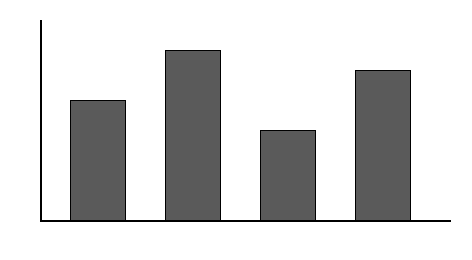

Universidade do Estado de Santa Catarina – UDESC
Centro de Ciências da Administração e Socioeconômicas – ESAG
Curso de Administração Empresarial
Nome Completo do Autor
Título do trabalho de exemplo: subtítulo sem negrito
Florianópolis
2026
Nome Completo do Autor
Título do trabalho de exemplo: subtítulo sem negrito
Trabalho de Conclusão de Curso apresentado ao Curso de Administração Empresarial do Centro de Ciências da Administração e Socioeconômicas, da Universidade do Estado de Santa Catarina, como requisito parcial para a obtenção do grau de Bacharel em Administração.
Orientador: Prof. Dr. Nome Completo do Orientador.
Florianópolis
2026
Este resumo de exemplo confere a formatação do elemento no padrão da Universidade do Estado de Santa Catarina. O texto fica em parágrafo único, sem recuo na primeira linha, com entrelinha 1,5 e alinhamento justificado. O resumo de um trabalho acadêmico tem de 150 a 500 palavras, apresenta logo na primeira frase o tema principal e traz, de forma clara e sintética, a natureza do trabalho, o objetivo, o método, os resultados e as conclusões. Convém a voz ativa e, de preferência, a terceira pessoa do singular. O resumo evita enumeração de tópicos, frases negativas, abreviaturas, fórmulas, diagramas, quadros e equações, e não repete trechos literais do corpo do trabalho. Ele precisa ser inteligível por si mesmo, de modo que o leitor decida, só pela leitura dele, se vale consultar o trabalho inteiro. Logo abaixo do texto vêm as palavras-chave, de três a cinco, em letras minúsculas, separadas por ponto e vírgula e terminadas em ponto final. A expressão que as introduz fica em negrito, com a inicial maiúscula. Este parágrafo passa de cento e cinquenta palavras para que a checagem automática o aceite como exemplo completo de resumo.
Palavras-chave: formatação; trabalho acadêmico; normas técnicas; exemplo.
This sample abstract checks the formatting of the element in the standard of the State University of Santa Catarina. The text is a single paragraph, with no first-line indent, 1.5 line spacing and justified alignment. The abstract of an academic work has from 150 to 500 words, states the main subject in its first sentence and presents, clearly and briefly, the nature of the work, the objective, the method, the results and the conclusions. The active voice is preferred, ideally in the third person singular. The abstract avoids lists of topics, negative sentences, abbreviations, formulas, diagrams, charts and equations, and does not repeat literal passages of the body of the work. It must be understandable on its own, so that the reader decides, from it alone, whether the whole work is worth reading. Right below the text come the keywords, from three to five, in lowercase letters, separated by semicolons and ended by a period. The expression that introduces them is in bold, with an initial capital letter. This paragraph passes one hundred and fifty words.
Keywords: formatting; academic work; technical standards; example.
| ABNT | Associação Brasileira de Normas Técnicas |
| Udesc | Universidade do Estado de Santa Catarina |
A Associação Brasileira de Normas Técnicas (ABNT) publica as normas que a Universidade do Estado de Santa Catarina (Udesc) segue nos trabalhos acadêmicos. Depois da primeira menção por extenso, o texto usa só a sigla: a ABNT revisou a norma de citações em 2023Nota explicativa de exemplo, em fonte 10 e espaçamento simples, justificada. Quando a nota ocupa mais de uma linha, a segunda linha começa sob a primeira letra da primeira palavra, destacando o expoente.. Uma citação direta curta fica entre aspas, com a página: "o texto citado aparece entre aspas duplas" (Silva, 2020, p. 12). A citação indireta dispensa as aspas e a página, como fazem Souza, Santos e Matos (2019).
Este parágrafo de exemplo mostra o texto corrido do trabalho: fonte 12, entrelinha 1,5, recuo de 1,25 cm na primeira linha e alinhamento justificado. O conteúdo não tem valor acadêmico e serve só para conferir a formatação de cada elemento contra o Manual de Trabalhos Acadêmicos da Universidade do Estado de Santa Catarina. Quando o texto ocupa várias linhas, o recuo aparece apenas na primeira, e as demais encostam na margem esquerda de 3 cm.
Os títulos das seções secundárias ficam em maiúsculas e sem negrito. Quando ocupam mais de uma linha, a segunda linha fica sob a primeira letra da primeira palavra do título, e não sob o número. O documento interno de uma organização é indicado no texto ou em notaRelatório interno de exemplo, documento da organização, consultado com autorização em 10 de agosto de 2026., sem entrar na lista de referências.
As alíneas organizam assuntos sem título. O texto que as antecede termina em dois-pontos:
A citação direta com mais de três linhas fica em parágrafo próprio, com recuo de 4 cm, fonte 10, espaçamento simples e sem aspas, como no exemplo:
Este trecho de exemplo representa uma citação direta longa. Ele ocupa mais de três linhas no texto, por isso sai do corpo do parágrafo e ganha recuo de quatro centímetros da margem esquerda, fonte menor e espaçamento simples entre as linhas, sem aspas, com a chamada de autor no fim (Silva, 2020, p. 15).
O texto continua depois da citação longa, separado dela por uma linha de 1,5 em branco.
Uma segunda lista de alíneas recomeça na letra a:
A seção quinária é o último nível permitido, sem destaque tipográfico. A Figura 1 mostra um quadro, que é ilustração e tem bordas laterais fechadas.
Figura 1 – Quadro de exemplo com o título acima, centralizado e em fonte 12
| Elemento | Regra |
|---|---|
| Título da ilustração | Acima, fonte 12, espaçamento 1,5, centralizado |
| Fonte da ilustração | Abaixo, fonte 10, espaçamento simples, centralizada |
Fonte: Elaborada pelo autor (2026).
A Figura 2 mostra uma imagem. Com a classe "figura", o título e a fonte ficam presos à largura da imagem.
Figura 2 – Gráfico de exemplo em imagem, com o título preso à largura dela

Fonte: Elaborada pelo autor (2026).
A Tabela 1 traz dado numérico como informação central e, por isso, não tem bordas laterais nem traços entre as linhas.
Tabela 1 – Exemplo de tabela, com dados fictícios, 2026
| Item | Quantidade | Participação (%) |
|---|---|---|
| Item A | 120 | 60,0 |
| Item B | 80 | 40,0 |
| Total | 200 | 100,0 |
Fonte: Elaborada pelo autor (2026).
Este parágrafo de exemplo mostra o texto corrido do trabalho: fonte 12, entrelinha 1,5, recuo de 1,25 cm na primeira linha e alinhamento justificado. O conteúdo não tem valor acadêmico e serve só para conferir a formatação de cada elemento contra o Manual de Trabalhos Acadêmicos da Universidade do Estado de Santa Catarina. Quando o texto ocupa várias linhas, o recuo aparece apenas na primeira, e as demais encostam na margem esquerda de 3 cm.
Este parágrafo de exemplo mostra o texto corrido do trabalho: fonte 12, entrelinha 1,5, recuo de 1,25 cm na primeira linha e alinhamento justificado. O conteúdo não tem valor acadêmico e serve só para conferir a formatação de cada elemento contra o Manual de Trabalhos Acadêmicos da Universidade do Estado de Santa Catarina. Quando o texto ocupa várias linhas, o recuo aparece apenas na primeira, e as demais encostam na margem esquerda de 3 cm.
Este parágrafo de exemplo mostra o texto corrido do trabalho: fonte 12, entrelinha 1,5, recuo de 1,25 cm na primeira linha e alinhamento justificado. O conteúdo não tem valor acadêmico e serve só para conferir a formatação de cada elemento contra o Manual de Trabalhos Acadêmicos da Universidade do Estado de Santa Catarina. Quando o texto ocupa várias linhas, o recuo aparece apenas na primeira, e as demais encostam na margem esquerda de 3 cm.
Toda seção primária começa em página nova, no topo da mancha. A numeração das notas continua de uma seção para a outra, sem recomeçar a cada páginaSegunda nota explicativa de exemplo, numerada em sequência à anterior..
Este parágrafo de exemplo mostra o texto corrido do trabalho: fonte 12, entrelinha 1,5, recuo de 1,25 cm na primeira linha e alinhamento justificado. O conteúdo não tem valor acadêmico e serve só para conferir a formatação de cada elemento contra o Manual de Trabalhos Acadêmicos da Universidade do Estado de Santa Catarina. Quando o texto ocupa várias linhas, o recuo aparece apenas na primeira, e as demais encostam na margem esquerda de 3 cm.
Este parágrafo de exemplo mostra o texto corrido do trabalho: fonte 12, entrelinha 1,5, recuo de 1,25 cm na primeira linha e alinhamento justificado. O conteúdo não tem valor acadêmico e serve só para conferir a formatação de cada elemento contra o Manual de Trabalhos Acadêmicos da Universidade do Estado de Santa Catarina. Quando o texto ocupa várias linhas, o recuo aparece apenas na primeira, e as demais encostam na margem esquerda de 3 cm.
Este parágrafo de exemplo mostra o texto corrido do trabalho: fonte 12, entrelinha 1,5, recuo de 1,25 cm na primeira linha e alinhamento justificado. O conteúdo não tem valor acadêmico e serve só para conferir a formatação de cada elemento contra o Manual de Trabalhos Acadêmicos da Universidade do Estado de Santa Catarina. Quando o texto ocupa várias linhas, o recuo aparece apenas na primeira, e as demais encostam na margem esquerda de 3 cm.
Este parágrafo de exemplo mostra o texto corrido do trabalho: fonte 12, entrelinha 1,5, recuo de 1,25 cm na primeira linha e alinhamento justificado. O conteúdo não tem valor acadêmico e serve só para conferir a formatação de cada elemento contra o Manual de Trabalhos Acadêmicos da Universidade do Estado de Santa Catarina. Quando o texto ocupa várias linhas, o recuo aparece apenas na primeira, e as demais encostam na margem esquerda de 3 cm.
Este parágrafo de exemplo mostra o texto corrido do trabalho: fonte 12, entrelinha 1,5, recuo de 1,25 cm na primeira linha e alinhamento justificado. O conteúdo não tem valor acadêmico e serve só para conferir a formatação de cada elemento contra o Manual de Trabalhos Acadêmicos da Universidade do Estado de Santa Catarina. Quando o texto ocupa várias linhas, o recuo aparece apenas na primeira, e as demais encostam na margem esquerda de 3 cm.
Este parágrafo de exemplo mostra o texto corrido do trabalho: fonte 12, entrelinha 1,5, recuo de 1,25 cm na primeira linha e alinhamento justificado. O conteúdo não tem valor acadêmico e serve só para conferir a formatação de cada elemento contra o Manual de Trabalhos Acadêmicos da Universidade do Estado de Santa Catarina. Quando o texto ocupa várias linhas, o recuo aparece apenas na primeira, e as demais encostam na margem esquerda de 3 cm.
A conclusão retoma o que o trabalho fez, sem trazer informação nova. Aqui ela fecha o exemplo de elementos.
SILVA, Nome. Título de exemplo de um livro: subtítulo sem destaque. 2. ed. Florianópolis: Editora Exemplo, 2020.
SOUZA, Nome; SANTOS, Nome; MATOS, Nome. Título de exemplo de um artigo. Revista de Exemplo, Florianópolis, v. 10, n. 2, p. 1-20, maio/ago. 2019.
O apêndice é um texto elaborado pelo autor. O título fica centralizado, em maiúsculas e negrito, em página nova, e a paginação continua a do texto.